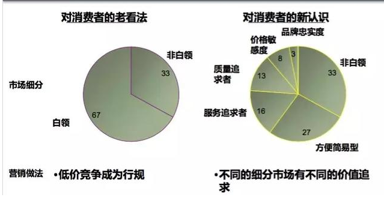

分享人:赵蒙恩
一.什么是用户洞察
二.容易存在的误区
三.总结
一.什么是用户洞察
我们通常所说的用户数据的收集分析使用，用户数据挖掘，量化营销等概念，在埃森哲的价值框架中，都是用户洞察的一部分。
这样一种概括已经被越来越多的企业与专家认可。用户洞察不是指某个用户服务人员，用户接触人员个人对用户的熟悉与了解的能力，它指是在企业或部门层面对用户数据的全面掌握及在市场营销与用户互动各环节的有效应用。
(1)说起细分市场，大家常会用年龄、收入等进行描述。真正的细分市场不是按收入、地区、婚否、家庭、年龄等人口统计学特征划分的，它指的是有着相似需求和利益的一群人。

如图~即使收入高的用户每个人的消费观的不同，也会购买不同的产品，100个顾客67个白领。33个非白领，产品就是都卖给非白领对了吗？最后只有天天促销。但是可以把67个白领用户细分。
第一种重视品牌，只认牌子不考虑价格
第二种重视价格，心中有一个价值点，超过心里的预设值就会不买，不管性能，服务如何如何的好~3000块预算进卡吧，价格加到八万八是不存在的，3000块钱进图吧~学校对面开网吧是极好的、
第三种是重视质量的，不管价格，不管牌子，只要好用品质至上
第四种是服务追求者，如海底捞~好不好吃不重要，服务到位就好~
第五种追求方便，网购可以直接到家最好~如狗东~
这67个白领是一种人还是5种人？传统思维下会认为只是一种人，现在改变思维，把他们视为五种人，针对他们制定相应的策略产品、营销、渠道，甚至团队就都会不一样。只要用户不定，什么都定不下来，什么都会有偏差、
1.人口社会、经济地理如果你问企业家们，其目标用户是谁，他们往往会说用户是25~35岁、收入在1万左右的白领；这种说法天生的缺点是你无法判断用户会不会买，这种描述下的目标人群跟未来的购买行为没有关系，但优点是比较容易量化。
2.行为 消费标准清楚五个W一个H。就是1.what：了解消费者知道什么、购买什么。2.who：了解消费者是哪些人。3.where：了解消费者在哪购买，在哪用。4.when：在消费和购买某类商品和服务的具体时间。5.how：了解消费者怎样购买、喜欢什么样促销，如何用。6.why：了解消费者行为的动机。
3.产品品牌态度动机品牌动机，往往是类别、价格、款式，种类，即用户购买产品的背后动机是什么。
4.4.生活方式。文化潮流用户的生活方式决定了用户的购物动机，消费关决定了消费能力很多品牌宣传的自我优势主要还是停留在产品功能层面，如质量，款式等，但其实这些很难差异化，因为容易复制，真正能深入人心的品牌都是重新塑造了生活方式，比如美国娃娃、哈雷、乐高等。
例如李宁，在以前主打二三线城市，与阿迪达斯、耐克、在一线城市，相安无事在01以后的奥运会以后，开始想要进军一线城市，放弃了只有李宁自己做代言人的做法，开始聘请其他明星。原本主要赞助中国传统体育项目体操，体操受众跟阿迪达斯和耐克的用户不太相关，但是后来开始跟阿迪达斯、耐克抢，也要赞助NBA，但是没有激发用户热情，还疏远了原来的客户群。
这样一来，原本面向二三线城市的老产品，老顾客，开始去一线跟耐克、阿迪抢，并且模仿耐克阿迪，这样一既让老用户觉得你变了~耐克。阿迪的老用户也觉得你学不像，无法取代耐克阿迪。
《需求》这本书中有一个案例，讲的是美国加州的一家医疗机构,它在挖掘客户痛点方面做得非常好。比如，他们发现三分之一的老年患者没有按照预约的时间来看病，分析原因发现40%的老人由于独自生活，不能开车，只能打急救电话；再如，他们发现糖尿病人截肢率高，很多是由小伤口引发的，但医院没有专门的门诊处理小伤口，等等。这家医院的创始人从行业服务的不足对用户痛点和背后的原因进行洞察，最后做了很多竞争对手不愿意干的事情。比如，他们免费用车接老人来医院看病，专门搞了个门诊部处理小伤口，等等。表面看上去好像增加了成本，但却增加了营收。由于解决了竞争对手不愿意解决的问题，这家医疗结构的患者推荐率是80%，总体医患成本比行业低18%，住院率比行业低24%，平均住院时间比其他医院低28%，结果是比任何医院都赚钱。
事例告诉我们 我们要减少用户麻烦，而非减少成本，如果我们能把人的重要性放在盈利前面，我们就能盈利。产品就可以获得用户的喜爱
客户生命周期也是客户细分的一个新的思考维度，同一个用户如果按照生命周期划分，可以分为将信将疑、潜在、新顾客、回头客、主流顾客、休眠、流失客等7种，应该围绕用户不同生命周期实施不同的个性化的产品服务。
不关心数据，而是凭经验和直觉来决策，无论是大数据还是企业用户的购物小数据，都可以帮助我们更好地洞察用户
第一，不要只以年龄收入来细分顾客，要记住细分市场的4个标准。
第二，用市场吸引力跟支持能力纵横轴来选择自己最合适的细分市场，不要心太大，什么客户都要做。
第三，产品的起步基础是花最大力气先找到用户未满足的需求跟服务的不足。产品成功的起点是对手没看到这个机会、问题，你看到了。
第四，同一个用户在固定生命周期应该有不同的产品或服务。
第五，客户洞察的时候借助数据辅助决策。
By:赵蒙恩